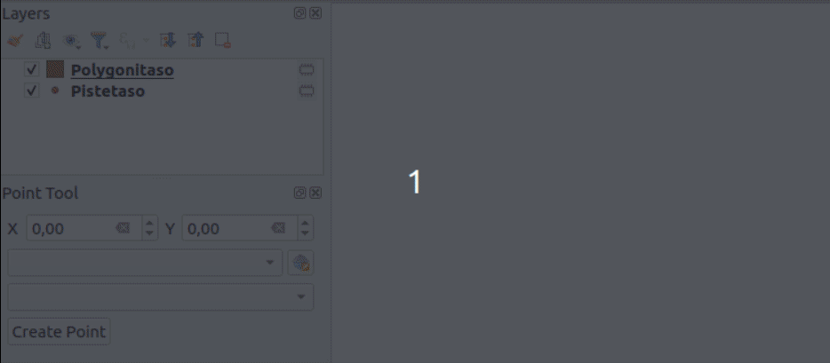
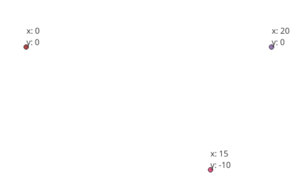

Harjoitus 7: Pistetyökalu
Harjoituksen tarkoituksena on luoda pistetyökalu, jolla voi luoda koordinaattien pohjalta pistekohteen. Käyttöliittymässä on alasvetolaatikko pistetasoille (tasoja, joilla on eri geometriatyyppi ei näytetä ollenkaan). Jos tasoa ei ole valittu, täytyy käyttäjän valita koordinaattijärjestelmä, ja tällöin työkalu luo uuden pistetason kyseisellä koordinaattijärjestelmällä. Tasolle lisätään pistekohde ja tallennetaan sen koordinaatit ‘x’ ja ‘y’-kenttiin.

Jos käyttäjä ei ole valinnut tasoa eikä koordinaattijärjestelmää, lisäosa näyttää virheen. Jos käyttäjä on valinnut pistetason, koordinaattijärjestelmä-widget inaktivoituu ja se ei vaikuta lisättävään pisteeseen mitenkään.

Edellisessä harjoituksessa käytiin yksityiskohtaisesti läpi työkalun toteutus lisäosaan. Tämän harjoituksen on tarkoitus olla itsenäisempi. Tälle työkalulle luodaan paneelikäyttöliittymä (QDockWidget), joten käydään aluksi sen luominen läpi pääpiirteittäin.
Harjoitus 7.1: Paneelin lisääminen
Avaa Qt Designer ja valitse New Form -dialogissa Widgets-valikon alta QDockWidget. Vaihda widgetin nimeksi PointToolDockWidget. Luo kuvan mukainen käyttöliittymä, jossa on käytetty seuraavia widgettejä:

- X: QgsDoubleSpinBox (nimi: xSpinBox)
- Y: QgsDoubleSpinBox (nimi: ySpinBox)
- QgsProjectionSelectionWidget (nimi: crsWidget)
- QgsMapLayerComboBox (nimi: layerComboBox)
- QPushButton (nimi: createPushButton)
Tallenna käyttöliittymä polkuun test-plugin/testplugin/resources/ui/point_tool.ui.
Halutessasi voit tallentaa ikonin työkalulle polkuun test-plugin/testplugin/resources/icons/point_tool.png.
Voit ladata esimerkiksi tämän kuvan: 
Luo uusi tiedosto test-plugin/testplugin/ui/point_tool_dockwidget.py ja lisää koodi:
import logging
from typing import Optional
from qgis.PyQt.QtCore import pyqtSignal
from testplugin.core.pointtool import PointTool
from qgis.PyQt.QtWidgets import (
QDockWidget,
QWidget,
)
from testplugin.qgis_plugin_tools.tools.custom_logging import bar_msg
from testplugin.qgis_plugin_tools.tools.decorations import log_if_fails
from testplugin.qgis_plugin_tools.tools.resources import load_ui, plugin_name
FORM_CLASS: QWidget = load_ui("point_tool.ui")
LOGGER = logging.getLogger(plugin_name())
class PointToolDockWidget(QDockWidget, FORM_CLASS):
closingPlugin = pyqtSignal()
def __init__(self, iface, parent=None):
"""Constructor."""
super(PointToolDockWidget, self).__init__(parent)
self.setupUi(self)
def close_event(self, event):
self.closingPlugin.emit()
event.accept()Avaa seuraavaksi test-plugin/testplugin/plugin.py ja tee seuraavat
muutokset:
Muokkaa importteja:
Koodissa pitäisi olla import jo QCoreApplicationille ja QTranslatorille. Lisää joukkoon Qt.
from qgis.PyQt.QtCore import Qt, QCoreApplication, QTranslatorKoodissa pitäisi olla import jo plugin_namelle. Lisää joukkoon resources_path.
from testplugin.qgis_plugin_tools.tools.resources import plugin_name, resources_pathImportoi äsken luotu dockwidget-luokka.
from testplugin.ui.point_tool_dockwidget import PointToolDockWidgetSeuraavaksi muokkaa Plugin-luokan konstruktoria (__init__-metodi).
Lisää rivit:
self.dockwidget = PointToolDockWidget(iface)
self.pluginIsActive = FalseLisää initGui()-metodiin:
self.add_action(
resources_path("icons/point_tool.png"),
text=tr("Point Tool"),
callback=self.open_point_tool,
parent=iface.mainWindow(),
)Lisää onClosePlugin()-metodiin:
self.dockwidget.closingPlugin.disconnect(self.onClosePlugin)
self.pluginIsActive = FalseLisää uusi metodi open_point_tool():
def open_point_tool(self) -> None:
"""Opens point tool dock widget"""
if not self.pluginIsActive:
self.pluginIsActive = True
self.dockwidget.closingPlugin.connect(self.onClosePlugin)
iface.addDockWidget(Qt.LeftDockWidgetArea, self.dockwidget)
self.dockwidget.show()Voit myös luoda jo valmiiksi uuden tiedoston coreen
test-plugin/testplugin/core/pointtool.py
from testplugin.core.exceptions import PointToolException
class PointTool:
passJa lisätä test-plugin/testplugin/core/exceptions.py-tiedostoon:
class PointToolException(QgsPluginException):
passPäivitä plugin. Työkalua klikatessa QGIS-ikkunan vasempaan reunaan pitäisi avautua uusi paneeli.
Harjoitus 7.2: Työkalu
Seuraavaksi lisää lisäosalle kuvatun mukainen toiminnallisuus. Tarvittaessa kysy apua kouluttajalta tai katso apua mallilisäosasta:
test-plugin/testplugin/plugin.py
test-plugin/testplugin/ui/point_tool_dockwidget.py
test-plugin/testplugin/resources/ui/point_tool.ui
test-plugin/testplugin/core/pointtool.py
test-plugin/testplugin/core/exceptions.py
Harjoitus 7.2.1: Lisähaaste - nimiöinti
Kun työkalu lisää uuden taso, määritä tasolle nimiönti joka piirtää kartalle niiden x ja y koordinaatit:

Harjoitus 7.3: Testit
Luo uusi tiedosto test-plugin/tests/test_point_tool.py.
Kirjoita kaksi testiä:
test_create_new_point_layer()test_add_point_to_layer()
Toisessa testissä nimien mukaisesti luodaan piste ilman valittua pistetasoa, jolloin työkalun tulisi luoda uusi pistetaso. Toisessa lisätään pisteitä jo olemassa olevalle pistetasolle.